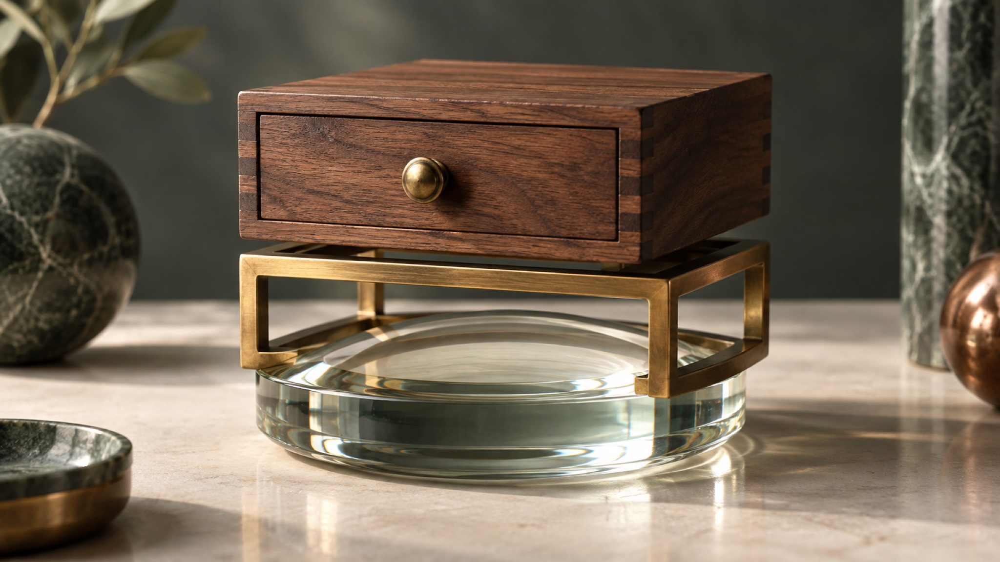
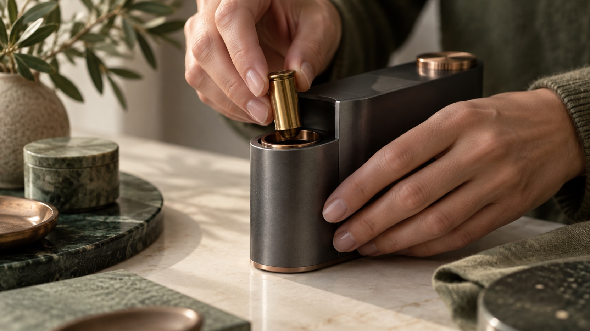
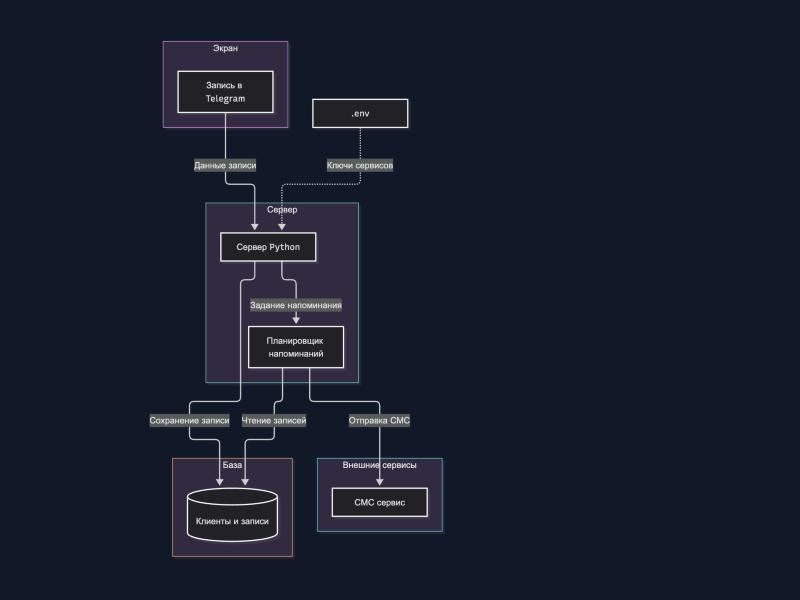

AI Цех · Поток 3 · Занятие 3 · 30 сентября 2026 · Уфа
Навыки, плагины
и MCP
Сегодня агент учится вашей работе: делаем свой навык, ставим готовые навыки и трёх сотрудников, разбираемся, как агент подключается к сервисам и какие права ему давать
Что унесёте сегодня
Свой навык
Срабатывает сам по вашей обычной фразе. И понимание, когда его заводить.
Готовые навыки и сотрудники
Где брать, как проверить до установки, как поставить. Плюс «Бизнес РФ», «Копирайтер», «Бухгалтер ИП».
API и MCP
Как агент подключается к почте, диску и сервисам и на какой уровень прав вы ему соглашаетесь.
Разбор домашки
Профиль подключён
Интервью про себя прошло, профиль лежит в общем AGENTS.md. Агент отвечает о вас по делу.
Навык съел 15% лимита
Две попытки, пятая часть пятичасового лимита. Сегодня разберём, почему так и как этого не допускать.
Блок 1
Навык: сохранённый
порядок работы
Не магия и не отдельная нейросеть. Инструкция для агента: когда появилась такая задача, работай вот так, проверяй вот это, бери вот эти заготовки
Промпт и навык
Промпт
Разовая просьба. Каждый раз объясняете заново, результат каждый раз немного другой.
Навык
Сохранённый порядок работы. Один раз записали, дальше зовёте обычной фразой, и агент работает одинаково.
Навыки не коллекция марок: десять дел, которые чат не сделает
Как устроен навык
Шапка
Имя и описание: когда звать навык и какими словами вы просите.
Инструкция
Короткие шаги, порядок работы, что проверить.
Скрипты и заготовки
По желанию: всё, что считается одинаково, и шаблоны.

Где лежат навыки в Claude
| Где | Для чего |
|---|---|
| .claude/skills в папке-окружении | Навык только для этой папки |
| .claude/skills в папке профиля | Навык для всех ваших проектов |
| Плагин | Готовый набор навыков, ставится из каталога |
| Customize → Skills | Посмотреть, какие навыки видит Claude |
Как навык запускается
Сам
Обычная фраза, агент узнаёт навык по описанию.
По имени
Наберите / и начало имени, выберите, допишите задачу.
Через AGENTS.md
Раздел «Навыки»: сначала звать навык, потом думать самому.
Чтобы агент сам увидел нужный навык
Плохо
«Помогает с файлами».
Хорошо
«Используй, когда я прошу навести порядок в папке: разбери папку, разложи файлы, наведи порядок в загрузках».
Руками: первый навык, которого нет у чата (Н2)
Сделай мне навык «разбор папки». Когда я пишу «разбери папку [имя]», ты смотришь все файлы в ней, предлагаешь, как разложить их по подпапкам и как понятно переименовать, показываешь план таблицей и переносишь только после моего «да». Ничего не удаляй. Сохрани навык в этой папке: .claude/skills/razbor-papki/SKILL.md. В описании (description) перечисли фразы: «разбери папку», «наведи порядок в папке», «разложи файлы». Инструкцию держи до 20 строк. Потом создай папку «Тест-разбор» и положи туда 12 учебных файлов разных типов с неряшливыми названиями, чтобы я проверил навык.
Три правила хорошего навыка
Ваши слова в описании
Нет ваших фраз, навык не узнают.
Коротко
Только шаги. Каждая строка читается при каждом запуске и тратит лимит.
Считает скрипт
Суммы, даты, выгрузки делает программа, а не модель.
Блок 2
Где брать готовые
навыки
Почти всё за вас уже придумано. Берём готовое, проверяем до установки и ставим только то, что закрывает ваши десять дел
Четыре адреса, где берут навыки
Каталог плагинов в Claude
Customize → Plugins: официальный каталог Anthropic и любые каталоги с GitHub.
skills.sh
Открытый каталог навыков. Ставится одной строкой, поддерживает Claude Code и Кодекс.
find-skills
Навык, который сам ищет другие навыки под вашу задачу. Ставится первым.
GitHub
anthropics/skills, awesome-списки сообщества. Всё открыто, код можно прочитать.
Одиннадцать открытых навыков под обычную рутину
| Задача | Навыки | Откуда |
|---|---|---|
| Документы, сметы, КП | slides, doc, spreadsheet, pdf | letta-ai/skills |
| Счета в PDF | pdf-merge-split, pdf-ocr | TerminalSkills/skills |
| Клиенты и договоры | competitive-intelligence, contract-review, draft-response, job-post-builder | anthropics/knowledge-work-plugins |
| Контент и соцсети | social | coreyhaines31/marketingskills |
Как поставить навык
Выписать свои десять дел
Промпт Р1: агент вытащит их вопросами, с цифрой по времени.
Поставить find-skills
Промпт М1: навык, который ищет другие навыки.
Найти навык под дело
Промпт М2: агент приносит 2-3 варианта и советует один.
Проверить до установки
Промпт Н4: что делает, какие команды, куда ходит, видит ли ключи.
Поставить и проверить
Промпт М3: агент ставит сам. Новый чат, обычная фраза, навык запустился.

Чужой навык сначала проверяет агент
Что делает
Простыми словами, без пересказа описания.
Какие команды запускает
На вашем компьютере, конкретными строками.
Куда ходит в интернет
Адреса, которых нет в описании, это тревога.
Видит ли ключи и личное
Пароли, ключи, переменные окружения.
Блок 3
Плагины: готовые
сотрудники
Плагин это коробка: навыки, подключения и правила под одну роль. Поставили один раз, дальше говорите обычными словами
Из чего состоит плагин
Навыки
Как делать: КП по заявкам, должники по таблице, разбор договоров.
Подключения
Чем делать: почта, диск, таблицы через MCP.
Шаблоны и правила
На что опираться: российские правила, рубли, «Вы».
Руками: ставим «Бизнес РФ»
Каталог
Customize → Plugins → Add → Add marketplace → Add from a repository.
Ссылка
github.com/Shchetnikovoff/biznes-rf, Sync.
Сотрудники
Вкладка Code: «+» у «Бизнес РФ», «Копирайтер», «Бухгалтер ИП».
Навыки в AGENTS.md
Промпт П1: сначала звать навык, потом думать самому.
Три сотрудника подряд
| Фраза | Сотрудник | Что получите |
|---|---|---|
| Разбери заявки из папки: таблица, ответы и КП файлами | Бизнес РФ | tablica.md, папка otvety, kp.md с «уточнить» |
| Прочитай мои посты, план на 4 недели и 4 поста в моём голосе | Копирайтер | plan-postov.md и 4 файла в posts/new |
| Посчитай по выписке скриптом аванс УСН и хватит ли денег | Бухгалтер ИП | raschet.md с расчётом по строкам |
«Бизнес РФ» на ваших файлах: что умеет агент, а не чат
Куда уходит лимит

44 тысячи до первого слова
Пустой чат ученика: инструменты, подключения, навыки.
Каждый ход заново
Модель перечитывает всё окно целиком.
Новая задача: новый чат
Окно больше 75%: качество падает.
Свой первый сценарий
Промпт С1
Агент скачивает каталог из 89 готовых сценариев по 10 ролям.
Пять вопросов
По одному: что повторяется, где теряются деньги и клиенты.
Три варианта
Выбираете один, агент ставит навык после «да».
Схема из текста: архитектура за минуту

Агент пишет текст
Промпт К4: схема приложения для новичка, до 8 блоков.
mermaid.live рисует
Бесплатно, без регистрации, без установки.
Майндкарта тем же путём
Промпт К5: идея в центре, четыре ветки.
Claude и Кодекс вместе
План
Claude пишет plan.md.
Кодекс рисует
Кодекс по плану делает страницу-схему.
Сверка
Claude сверяет результат с планом и показывает.
Блок 4
API и MCP:
руки агента
Дальше агент выходит за пределы вашей папки: почта, диск, календарь, таблицы. Главный вопрос здесь один: какие права вы ему даёте
Цепочка целиком
| Звено | Что это | Пример |
|---|---|---|
| Человек | Ставит задачу и решает | «Найди договор и выпиши сроки» |
| Агент | Выполняет | Claude, Кодекс |
| Навык | Порядок работы | Как разбирать договор |
| MCP | Переходник для агента | Коннектор Google Диска |
| API | Дверь сервиса | Интерфейс Google Диска для программ |
| Сервис | Где лежат данные | Ваш Google Диск |
Почему появился единый стандарт
Раньше
Каждый сервис соединялся по-своему, как если бы у каждого устройства была своя зарядка.
Сейчас: MCP
Один общий протокол. Его поддержали Anthropic, OpenAI и Google. Подключили к Claude, и это не привязано к Claude намертво.
Шесть слов, чтобы не потеряться
API
Дверь сервиса.
MCP
Переходник для агента.
Навык
Сохранённый порядок работы.
Плагин
Готовая коробка с навыками и подключениями.
Ключ (API key)
Пароль для программы. Никому не показываем.
Токен
Одно слово, два смысла: ключ бота и кусочки текста, по которым считается расход.
Четыре уровня прав
| Уровень | Что разрешаем | Пример |
|---|---|---|
| 1. Только читать | Смотреть, ничего не менять. Безопасно | Сводка писем за неделю |
| 2. Черновик | Готовит, но не отправляет | Черновик ответа клиенту |
| 3. Действие с подтверждением | Делает после вашего «да» | Поставить встречу в календарь |
| 4. Действие само | Без вас. Опасно: нужны тесты, лимиты, откат | Сам отвечает на заявки |
Дипресёрч в Claude: ставим шаг за шагом
Node 18 или новее
nodejs.org. Без него сервисы не поднимутся, агент сам проверит версию.
Скачать файл навыка
Кнопка в шпаргалке, раздел «Дипресёрч». Один файл SKILL.md.
Промпт ДР1
Claude кладёт навык в .claude/skills и ставит шесть бесплатных сервисов командой claude mcp add.
Перезапустить Claude
Закрыть приложение и открыть. Команда /mcp показывает, что поднялось.
Ключи по одному (ДР2), потом исследование (ДР3)
Tavily, Firecrawl, Exa первыми. Каждый факт в ответе со ссылкой.
Двенадцать сервисов дипресёрча
| Сервис | Ключ | Где взять, бесплатно |
|---|---|---|
| parallel-search, you-search-free, anysearch, rivalsearch, open-websearch, playwright | Не нужен | Работают сразу после ДР1 |
| Tavily | Нужен | app.tavily.com, 1000 запросов в месяц |
| Firecrawl | Нужен | firecrawl.dev/app/api-keys, 1000 страниц в месяц |
| Exa | Нужен | dashboard.exa.ai/api-keys, 20 $ на старте |
| Apify, Jina, Bright Data | Нужен | Ссылки в шпаргалке. Карта только у Bright Data через 3 месяца |
Если дипресёрч не встал
| Что видите | Что делать |
|---|---|
| Сервис в списке, инструментов нет | Закрыть Claude полностью и открыть заново |
| Ошибка со словом npx | Не стоит Node: nodejs.org, потом повторить ДР1 |
| Сервис не отвечает, вы в России | Почти всегда нужен VPN |
| Ключ неверный | Промпт «почини сервис»: агент удалит и добавит заново |
| open-websearch молчит | Нужен флаг MODE=stdio, агент знает |
Если застрял
| Что случилось | Что делать |
|---|---|
| Навык не запустился сам | /имя и текст, потом промпт Н3 |
| Агент ответил сам, без навыка | Раздел «Навыки» в AGENTS.md (П1), плагин включён |
| Каталог плагинов не открывается | Windows: Git for Windows, перезапуск Claude |
| Новый навык не виден | Новый чат, если не помогло, перезапуск Claude |
| codex: scripts is disabled | Писать codex.cmd |
Домашка к понедельнику 05.10
Свой навык
Из своей повторяющейся задачи. Срабатывает сам: скрин нового чата.
Сотрудник на ваших файлах
Заявки, выписка или ваши материалы. Скрин результата и строка, что поправили руками.
Свой сценарий
Промпт С1: название сценария и скрин, что настроено.
Дипресёрч
Ставите себе сами в том порядке, что на слайде. Одно настоящее исследование по своей задаче.
Формула урока
Навык говорит,
как работать
MCP даёт агенту руки. API открывает дверь в сервис. Плагин собирает это в сотрудника. Сначала читаем и делаем черновики, только потом разрешаем действия